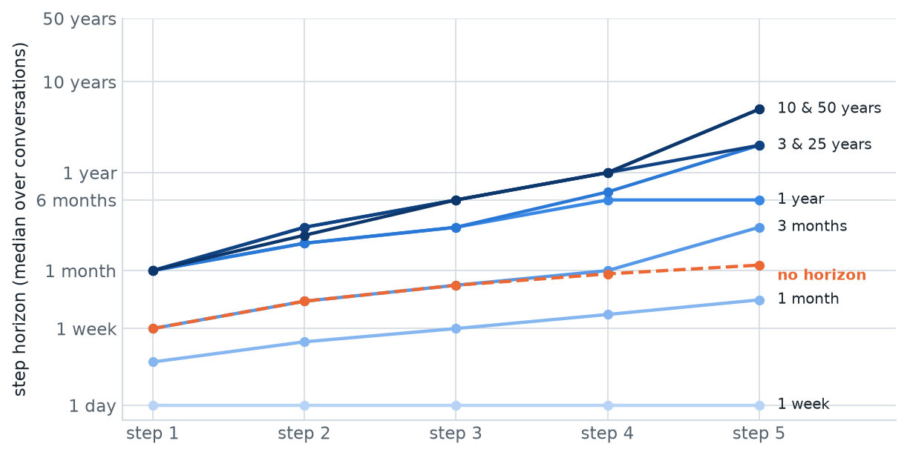
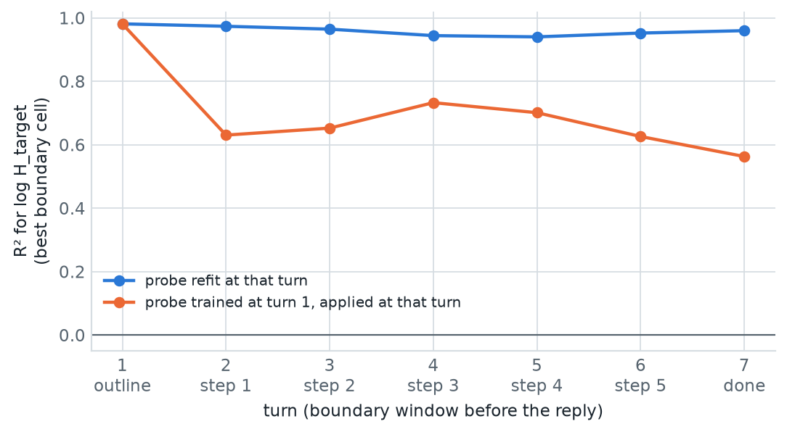
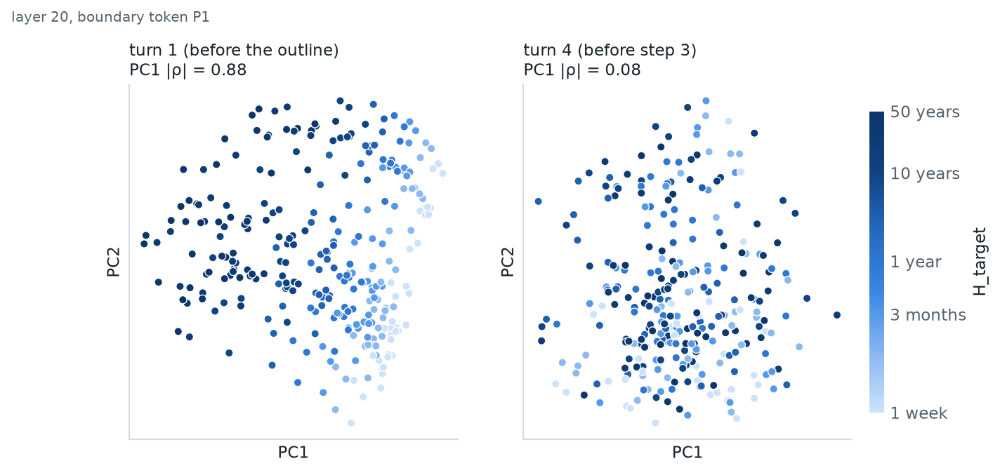
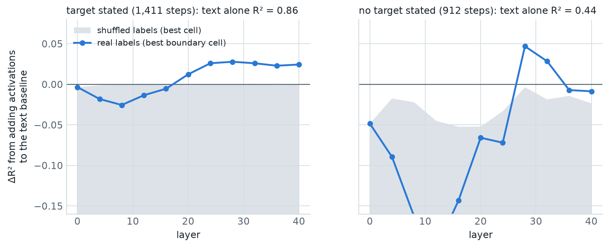
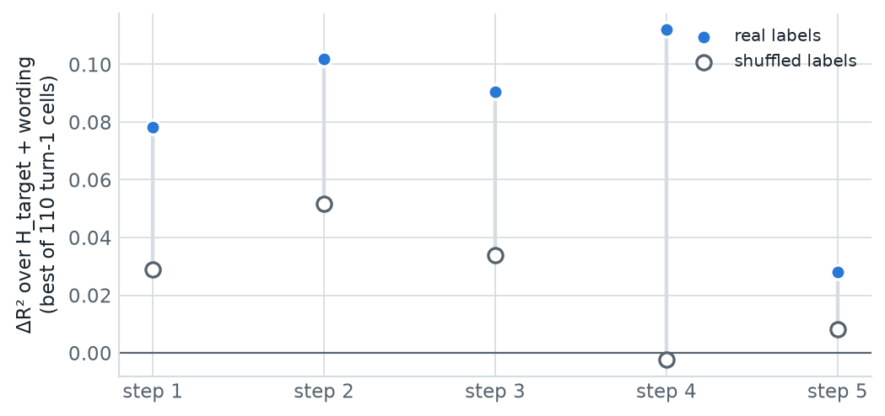
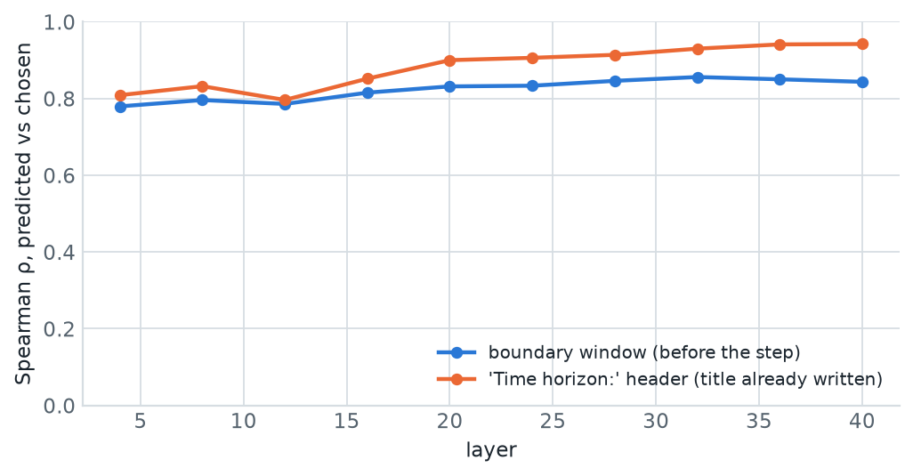

SPAR · Planning Temporal Manifolds · multi-turn planning
Does the horizon geometry survive a multi-step plan?
For single decisions, the time horizon a model plans for can be read from its activations at turn boundaries. Here Qwen3-14B writes a five-step plan over seven chat turns. We ask whether the horizon is still readable, and whether the boundary activations know something about the plan that the conversation's text doesn't already say.
0 · Background
The question, and why a plan needs a different design
PTM asks whether the time horizon a model is planning over can be read from its residual stream at turn-boundary tokens: the few template tokens between the end of the user's message and the start of the model's reply. For single decisions with a stated horizon, the preprint we extend (arXiv:2606.05194) found the horizon laid out along an ordered one-dimensional curve: the first principal component of the activations orders prompts by log horizon at |ρ| ≈ 0.95. Alan (Qwen3-14B) and Jared (Qwen3-8B) replicated this.
The proposal's next step is multi-step planning: does that geometry survive when the model builds a plan over several turns, and can each turn's horizon be read?
One lesson from earlier work shapes the design. Alan's experiments and the relevance-aware decoder run both found that when a horizon is written in the prompt, a regex on the text beats any activation decoder. The model can simply carry the written number forward. In a chat, the target stated in the first message is visible (through attention) from every later token. So "the target is readable at turn 5" could be plain copying, and would tell us nothing about planning.
The design principle
Read horizons that are not yet in the text at the moment we read the activations: the horizon of the step the model is about to write (section 5), later steps from the very first turn (section 6), and horizons nobody stated (section 7). And compare every activation result with a text-only baseline that sees everything written so far (section 2 explains how).
1 · Setup
The "Continue" protocol, made concrete
A fixed system prompt, identical in every conversation, sets the format: first an outline of exactly five step titles with no timings; then, each time the user says Continue, one step in the form Step <n>: <title> / Time horizon: <how far from today this step will be complete> / Details: …; after step 5, Plan Completed. The first user message gives a goal and, in most conversations, a target horizon:
That makes seven assistant turns. A real conversation from this run:
Solid boxes: the boundary window P0–P8 (plus U), before the reply. Dashed: positions inside the reply, which already see the written text. H is the Time horizon: header (the step's title is written), V is the horizon value itself (a positive control: it must be readable there), E closes the reply. Activations are captured at 11 layers (0, 4, 8, …, 40 of 40), on exactly the token sequence the model generated from.
What is already in the text at each boundary
Because a boundary is read before its reply, the reply's own horizon is never in the text there. But the earlier steps are. This table is the key to several caveats below:
| Turn | Reply about to be written | Text before the boundary | Step horizons already written |
|---|---|---|---|
| 1 | outline | system prompt + user message (goal, target) | none |
| 2 | step 1 | + outline (titles only, no timings) | none |
| 3 | step 2 | + step 1 | step 1's (e.g. "6 months") |
| 4 | step 3 | + step 2 | steps 1–2 |
| 5 | step 4 | + step 3 | steps 1–3 |
| 6 | step 5 | + step 4 | steps 1–4 |
| 7 | Plan Completed | + step 5 | steps 1–5 |
So turn 3 is the first boundary where a horizon the model wrote itself is in the context. The outline doesn't leak one: the rules forbid timings there, and none of the 480 outlines mentions a duration. From turn 3 on, anything readable might partly come from those written step horizons, which correlate with the target.
2 · Methods primer
How the numbers on this page are made
Every result below comes from the same few ingredients. If you know linear probing, skim the definitions in bold and read the last two parts (the text baseline and the shuffled control), which are specific to this experiment.
Activations and cells
At every turn we store the residual stream: the 5,120-number vector the model carries at each token, after a given layer. Layer 0 is the token embedding; layer l is the stream after the l-th transformer block.
A cell is one (layer, position) pair, e.g. layer 28 at token P7. Each analysis is run separately in every cell. The boundary analyses use 11 layers × 10 positions (P0–P8 and U) = 110 cells.
At layer 0 the boundary tokens are the same template tokens in every conversation, so their activations are identical. Any probe there must fail, and does: a built-in sanity check.
The target: log years
Every horizon is converted to years and then to log10(years): 1 week ≈ −1.72, 1 year = 0, 50 years ≈ 1.70. On this scale, being off by a factor of 2 costs the same (0.30) whether the truth is a week or a decade. That matches how horizons behave: "2 weeks instead of 1" is as wrong as "20 years instead of 10".
A probe: ridge regression
A probe is a linear formula, prediction = w · activation + b, fitted to predict the log horizon from the 5,120 numbers in one cell.
With 5,120 inputs and only 288 to 1,411 examples, an unconstrained fit would memorise the training data. Ridge regression adds a penalty on the size of the weights w. The penalty's strength is picked from 17 values (0.01 to 10⁶) using the training data only, by leave-one-out cross-validation. The probe is linear on purpose: "readable by a linear probe" is the standard sense of "the model represents this".
Held-out goals (grouped cross-validation)
Plans for the same goal share vocabulary, structure and step titles. A probe tested on a goal it was trained on could score well by recognising the goal rather than reading the horizon. So:
- The 12 goals are split into 6 folds of 2.
- The probe is trained on 10 goals and predicts the 2 held out.
- Repeat for all 6 folds. Every conversation gets exactly one prediction, from a probe that never saw its goal.
- The metrics below are computed once on these pooled out-of-sample predictions.
Four metrics
R² = 1 − (squared prediction error) / (variance of the truth). 1 means perfect; 0 means no better than always predicting the average horizon. It can be negative: a probe that is worse than the average, e.g. a probe applied where it doesn't fit (section 4) or one that fits noise.
Spearman ρ: do predictions put the horizons in the right order? It ignores scale and offset, so a probe can have a high ρ with a poor R² if its values are compressed or shifted (section 7).
Within 2×: the share of predictions within a factor of 2 of the truth (|log error| ≤ 0.30). The most intuitive of the four.
PC1 |ρ|: no training at all. Take the activations of all conversations in a cell, find their main direction of variation (the first principal component), and ask how well position along it orders the horizons. This is the preprint's "manifold" measure (≈ 0.95 for single decisions).
"Best cell" and why it flatters
Figures usually show the best cell (per layer, per turn or per step). Picking the maximum of 110 noisy scores is optimistic: some cell will look good by luck. That's why every best-cell number that matters is compared with the best cell of a shuffled control (below), which goes through the same maximum.
The text baseline
The text baseline is a simple predictor that never looks inside the model. It predicts a step's horizon from facts anyone could read off the conversation so far.
For the next step (section 5), it uses four facts:
- the target from the user's message (log years),
- which step comes next (1–5),
- the previous step's horizon, if there is one,
- how the request worded the horizon (one of three sentences).
It combines them with ordinary least squares, the same line-fitting you'd do in a spreadsheet, and it is scored with the same held-out goals as the probes. Without a target (sections 5 and 7) it has only facts 2 and 3. For turn 1 (section 6) it has facts 1 and 4.
The plans are stereotyped: a 5-year plan whose step 1 is "6 months" will probably say "12 months" for step 2. So the baseline is strong: R² 0.86 for the next step. An activation result only counts as new information if it beats this baseline. What it doesn't know is the goal ("piano" vs "flood readiness"), which is text too; see the caveat in section 6.
Text + activations, and ΔR²
To measure what the activations add on top of the text, the analysis gives them only what the text got wrong:
ΔR² = R²(b + rpred) − R²(b)
All four steps use the same held-out-goal folds, so the baseline's predictions, the residuals and the probe are all out-of-sample. If the activations only repeat what the text says, rpred is noise and ΔR² is zero or slightly negative (fitting 5,120 weights to noise costs a little). A positive ΔR² means the activations predict part of what the text could not.
The shuffled control
The shuffled control is the chance level for ΔR². It answers: how big can ΔR² get when there is, by construction, nothing to find?
- Take the residuals r (the "labels" the activation probe is trained on).
- Shuffle them among the conversations of the same goal. Each conversation's activations are now paired with another conversation's residual.
- Rerun steps 3–4 unchanged, in every cell, and keep the best cell, exactly as for the real labels.
An illustration with made-up numbers, four plans for the same goal:
| Plan (goal: piano) | Activations | True residual | Shuffled residual |
|---|---|---|---|
| target 1 year, wording A | vector a₁ | +0.20 | −0.10 |
| target 3 years, wording B | vector a₂ | −0.10 | 0.00 |
| target 10 years, wording A | vector a₃ | +0.05 | +0.20 |
| target 25 years, wording C | vector a₄ | 0.00 | +0.05 |
Why only within the same goal? It keeps the shuffled data as close to the real data as possible: every goal keeps exactly its own set of residual values, so anything that differs between goals survives the shuffle. Only the link between this conversation's activations and this conversation's residual is broken. That's the stricter control: shuffling across goals would also destroy goal-level differences and make the chance level look lower than it is.
How to read it. In the figures, the shuffled result is a shaded band (section 5) or hollow dots (section 6). A real result counts only where it is clearly above it. The main limitation: one shuffle per analysis. Another shuffle would give a somewhat different chance level; many shuffles (a permutation test) would show its full range. That is the first item under next steps.
Transfer
Transfer means training a probe in one situation and applying it, unchanged, in another. If it still works, the information sits along the same direction in both. Section 4 trains at turn 1 and applies the probe at later turns (still on held-out goals). Section 7 trains on plans with a target and applies the probe to plans without one.
3 · Behavior
Do the plans follow the target?
Before reading activations: does the model's plan respond to the target at all? If it didn't, there'd be no planning horizon to read.

What it shows
The plans respond to the target: every step stays within it (allowing 10%), and the last step tracks it (slope 0.93 on the log–log scale, ρ 0.89; a slope of 1 would mean "last step = target").
But from one year up, the early steps barely depend on the target. Step 1 is 1 month for every target of a year or more, and steps 2–4 stay between 2 months and a year. Only step 5 stretches out, to 2–5 years. The first four steps of a 50-year plan fit inside a year.
Also
With no target, the model plans short: a median last step of about 5 weeks.
The last step is often open-ended ("Time horizon: Ongoing": 75 of 480 step-5s). Those steps are dropped from the analyses, not their conversations: 2,323 of 2,400 steps are used.
"Time horizon" is not always read as "from today": only 64% of plans have non-decreasing horizons, so some steps give a duration instead.
What it means
Two things. The plans are stereotyped (counting up, or jumping to the target at the end), so a text baseline that knows the target, the step number and the previous step will predict a lot. And the early steps being target-blind is a small myopia finding in its own right: the proposal's failure mode, visible in behavior.
4 · A · Persistence
Is the target still readable later in the chat?
At each turn's boundary, predict the target stated in the first message (288 conversations with a target).

How to read it
Blue: a probe trained and tested at the same turn (on different goals). Orange: the probe trained at turn 1, applied unchanged at a later turn (transfer, section 2).
What it shows
Turn 1 replicates the single-turn result: R² 0.98, within 2× on 95% of conversations, and PC1 alone orders the targets at |ρ| 0.88.
Later, the target is still there (refit R² 0.94–0.97), but the turn-1 probe reads it poorly (R² 0.56–0.73, within 2× only 27–40%). The information persists; its direction changes after turn 1.

Caveat
The target is written in the first message and visible from every later token, so "still readable" is expected and says little about planning on its own. And from turn 3 on, the model's own earlier step horizons are in the text too (table in section 1), and they correlate with the target. So "readable at turn t" may partly be reading those. Sections 5 and 6 are built to separate that out.
5 · B · The next step
Can we read the next step before it is written?
At the boundary before each step, predict the horizon the model is about to write. That horizon is not in the text yet, but a lot of it is predictable from the text. So the question is whether the activations add anything beyond the text baseline.

How to read it
The zero line is "activations add nothing to the text". The blue line is what they add in the best cell of each layer. The shaded band is the best the same procedure achieves on shuffled labels, i.e. by luck. Only blue above the band counts.
The panel titles give the text baseline's own R²: how much is predictable from the text alone.
What it shows
With a target (1,411 steps): the text alone reaches R² 0.86. The boundary activations add a small but real amount: R² 0.86 → 0.89 and within 2× 67% → 72% (layer 28, P7). The band stays at about zero or below (at most +0.0004), and 50 of the 110 cells beat its best. The gain sits at layers 24–32 and at the end of the window (P6–P8, U).
Without a target (912 steps): inconclusive. The text alone reaches only 0.44. One cell gains 0.05 and pokes above the band at layer 28, but only 3 of 110 cells gain at all, the median cell loses 0.14, and within 2× gets worse.
For scale: in the same cell, the activations alone (no text features) reach R² 0.84, almost as much as the text. Most of what they know about the next step is what the text says too; the ΔR² isolates the part it doesn't.
What it means
This is the core test. Before writing a step, the boundary tokens know a little about that step's horizon that the conversation so far doesn't reveal to a simple text model. Most of what's predictable, though, is the plan's simple structure, and the text shows that plainly.
6 · C · The first turn
Is the whole plan already there at turn 1?
At the boundary before the outline, nothing of the plan is written. Can the activations there predict the horizon of step 1, 2, … 5, beyond what the target and its wording predict?

What it shows
For steps 1–4, the best turn-1 cell adds 0.08–0.11 R² over target + wording, above the best shuffled cell (0.03–0.05; step 4: 0.00). Step 1's within-2× rises from 51% to 69%. For step 5 there is essentially nothing (0.03 vs 0.01).
So before the model has written a word of its plan, its boundary activations carry some information about the early steps' horizons beyond the target.
Why only "some"
The best cell is a maximum over 110, and the typical cell does worse than the baseline: the median cell loses 0.02–0.07, like the shuffled median (the cost of fitting 5,120 weights on 288 conversations). Only 10–37% of cells beat the best shuffled one. And the control is a single shuffle, not a full null distribution.
What else it could be
The baseline knows the target and the wording but not the goal. If the model treats "learn the piano" as fast-paced and "prepare a town for floods" as slow, turn-1 activations predict step horizons through the goal. That's text too, just harder to encode than a number. Held-out goals force the probe to generalise across goals, which makes this less likely but can't rule it out. A baseline that includes a sentence embedding of the goal would.
7 · D · No target stated
And when no target is given?
In the 192 plans without a target, every horizon is the model's own choice and no horizon phrase appears in the prompt. Does a probe from the plans with a target read these too?

What it shows
Before a step is written, the boundary window orders the horizons the model is about to choose at ρ 0.78–0.86 (rising with depth, best at layer 32). The values are much rougher: where the order is best (layer 32) they are off in scale (R² 0.09, within 2× 36%); the best-calibrated cell (layer 8) reaches R² 0.52, within 2× 62%. High ρ with low R² means right order, wrong numbers, the same gap Jared found for new horizon spellings on Qwen3-8B. At the Time horizon: header, where the step's title is already written, ρ reaches 0.94.
What it doesn't show
This number isn't compared with a text baseline, and the text does carry information here: the previous step's horizon and the step number alone predict these steps at R² 0.44 (section 5). Within these conversations the comparison with text (section 5, right panel) was inconclusive: the self-chosen horizons are hard to predict from either source.
8 · Method notes
What the pilots changed
| Found in | Problem | Change |
|---|---|---|
| Qwen3-1.7B (local) | writes the whole plan in the outline | too small; not used |
| Qwen3-4B (local) | format rules in the user turn were ignored; the first Continue was answered with "Step 2" | rules moved to a fixed system prompt; "the first Continue gets step 1" |
| Qwen3-14B smoke test | step 5 skipped ("Plan Completed" one turn early) in 8 of 15 conversations | step replies prefilled with Step <n>:. The prefill comes after P8, so the boundary window is unchanged |
| Qwen3-14B smoke test | step 5 "Time horizon: Ongoing" | drop that step, keep the conversation |
| local dry run | analysis crashed on tiny runs; no checksums after a late failure | guards; checksums written whenever the capture finished |
| the rented machine | analysis about 10× slower than locally (CPU thread oversubscription) | analysis run locally; the pipeline now pins threads to the container's CPU quota |
Final adherence on the full run: outlines titles-only 100%, step numbering 100% (thanks to the prefill), "Plan Completed" 100%, step horizons parsed 97%.
9 · Summary
Summary and next steps
Established (Qwen3-14B, one run, thinking off)
- The protocol works at this scale: 480 conversations, outlines and numbering 100%, 97% of step horizons parsed.
- Plans follow the target, but early steps are nearly target-blind above a year (myopic starts).
- Turn 1 replicates the single-turn geometry (R² 0.98, PC1 |ρ| 0.88).
- The target stays readable at every turn, but along a direction that changes after turn 1.
- Before a step is written, boundary activations add a small, real amount over the text (R² 0.86 → 0.89, above the shuffled control).
Suggestive, not established
- Turn 1 carries some information about steps 1–4 beyond target + wording (ΔR² up to 0.11); the goal text may explain it.
- Self-chosen horizons are ordered at ρ ≈ 0.85 by a probe from the stated-target plans, but badly scaled, and not tested against text.
Next (cheap, on the existing data)
- Many shuffles instead of one, for a real null distribution (a permutation test) in sections 5 and 6.
- A goal-aware text baseline (a sentence embedding of the goal) for sections 5 and 6.
- Transfer between later turns: does the direction settle after turn 1?
- Steering or erasure at layers 24–32, to test whether the model uses this (needs a GPU).
10 · Reproduce
Code, model and data
| Code | multiturn_planning/ on branch multiturn-planning: capture at commit a13c941, analysis at 54d15a4. Self-contained package mtp (prompts, chat positions, capture, analyses A–D). Design and pilot history: README.md. |
|---|---|
| Run | bash multiturn_planning/scripts/run_pipeline.sh on one GPU with ≥ 40 GB: tests → capture → adherence report → quick sanity evaluation → checksums. The full analysis, python multiturn_planning/scripts/evaluate.py runs/qwen3-14b_mtp_s0, runs on CPU (about 13 min on 12 cores). |
| Model | Qwen/Qwen3-14B, revision 40c069824f4251a91eefaf281ebe4c544efd3e18, bf16, thinking off. |
| Hardware | 1× RTX PRO 5000 Blackwell (48 GB) on vast.ai, torch 2.11 + CUDA 12.8, transformers 5.17. Capture 19 min; rental ≈ 1.4 h, ≈ $1.15 including data transfer. |
| Results | results/qwen3-14b_mtp_s0/ (in git): A_persistence.csv, B_next_step.csv, C_first_turn.csv, D_transfer.csv (every cell), behavior.json, summary.md. |
| Data | Not in git. The whole capture (≈ 4.9 GB: activations of all 3,360 turns at 11 layers × 13 positions, the per-turn table with every reply, metadata, logs, checksums) is published on Hugging Face as anicola/ptm-multiturn-planning-qwen3-14b (public, MIT), with SHA-256 checksums (sha256sum -c runs/qwen3-14b_mtp_s0/SHA256SUMS.release). Its layout mirrors this folder, so scripts/evaluate.py and explainer/make_figs.py run on a download. Card: hf/README.md; upload: scripts/upload_hf.py. |
| Figures | explainer/make_figs.py regenerates every figure on this page from results/ and the capture in runs/qwen3-14b_mtp_s0/. |